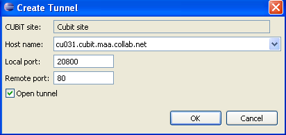

To add a tunnel, you must select a Lab Management host and specify the local and
remote ports.
-
In the CollabNet Sites view where you have added a Lab Management site, right-click, and
select Create tunnel.
-
In the Create Tunnel dialog, select a Lab Management host from the
Host name dropdown.

-
Specify the local port on your Lab Management host.
-
Specify the remote port on the server you want to tunnel to.
-
If you want the tunnel to be opened as soon as it is established, select
Open tunnel.
-
Click OK.
The details for your tunnel are stored. The tunnel is automatically reconnected when
you subsequently log into your host. You can see information about all your tunnels in
the Manage tunnels screen.